Lecture video
The Cell: full lecture
Open these in a new tab to follow along while the video plays. Tip: download to your tablet and write notes.
Focus: Human Anatomy
The Cell: Anatomy & Histology
The cell is the smallest living unit of the body. Every tissue, organ, and system is built from cells, so the structures named here are the foundation for the histology that follows. In a combined class this anatomy unit pairs with the cell physiology unit. Dr. Sharilyn Rennie
Download the PowerPoint · need a PDF? Download the accessible PDF from Canvas.
Part 1
The Cell & the Plasma Membrane
Every body cell shares three regions: a plasma membrane, the cytoplasm, and the nucleus. Start with the boundary that defines the cell.
Part 1 · The generalized cell
Three regions of the cell
A composite model shows the features shared by most body cells.
- The generalized cell is a composite model showing features shared by most body cells. No real cell looks exactly like it.
- Plasma membrane: the outer boundary that encloses the cell and separates it from its surroundings.
- Cytoplasm: everything between the membrane and the nucleus. It has two parts, the cytosol and the organelles suspended in it.
- Cytosol: the gel-like intracellular fluid that fills the cell, mostly water with dissolved ions, nutrients, and proteins. It is the medium the organelles sit in.
- Nucleus: the control center, usually the largest structure in the cell.
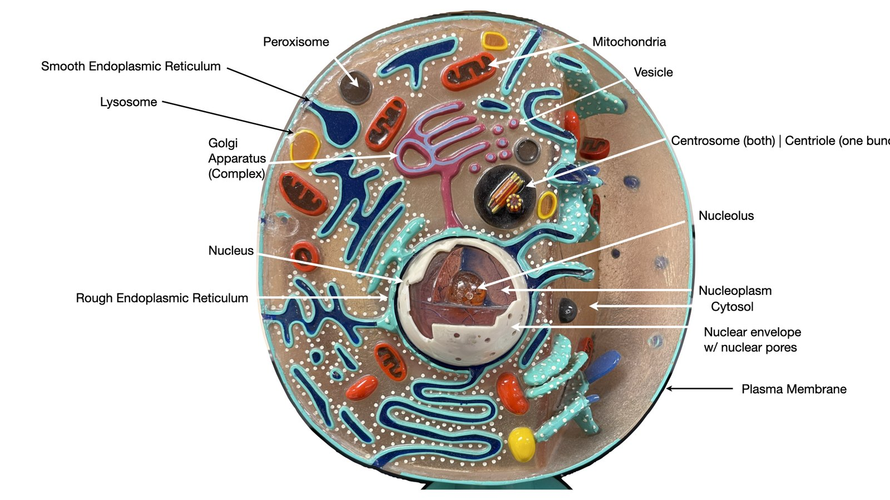
Round cell model (lab exam labels).
Part 1 · Lab model
The cell model you will label
You are responsible for these exact labels on the lab practical.
- Same structures, a different model body. Learn the parts, not one picture.
- Find the nucleus, nucleolus, and nuclear envelope first; they anchor everything else.
- Then place the endomembrane set: rough ER, smooth ER, Golgi apparatus, vesicles, lysosome, peroxisome.
- Finish with mitochondria and the centrosome / centriole.
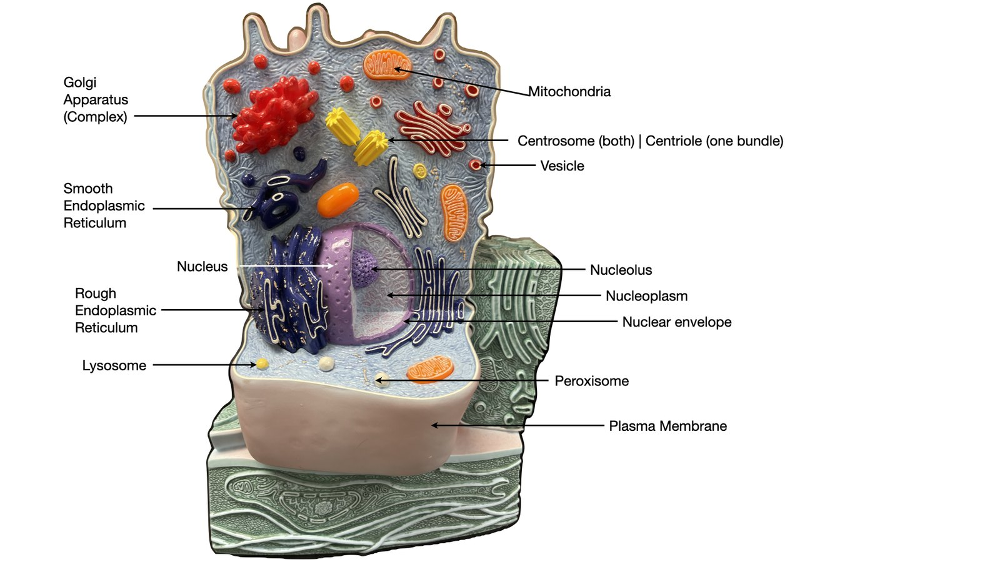
White cell model (same labels, different model).
Part 1 · The boundary
The plasma membrane
A selective barrier that controls what enters and leaves.
- Phospholipid bilayer: a double layer of phospholipids, the basic fabric. The fluid mosaic model describes proteins drifting within it.
- Integral proteins are firmly embedded; most span the bilayer as transmembrane proteins forming channels, carriers, and receptors.
- Peripheral proteins attach loosely to one face, acting as enzymes and bracing cell shape.
- Cholesterol wedges among the phospholipids to stabilize the membrane and keep it fluid.
- Glycocalyx: the fuzzy external coat of glycoproteins and glycolipids, the cell's identity badge for recognition and adhesion.
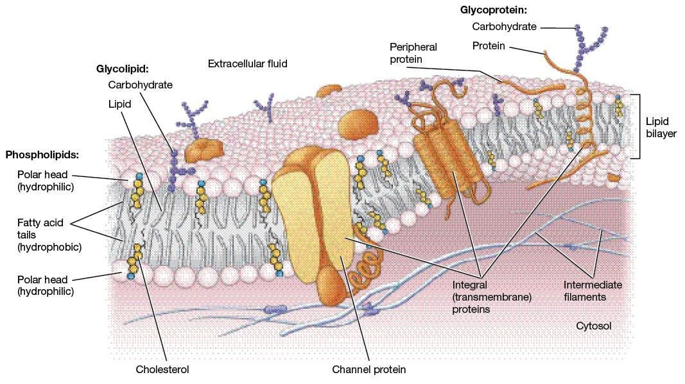
Fluid mosaic model of the membrane.
Histology image: LeBoffe histology, adapted by Rowley. Used with permission.
Glycocalyx: sugar chains branch from glycoproteins and glycolipids into a fuzzy outer coat (original diagram).
Part 2
Cell Surfaces & Junctions
Cells specialize their apical surface for absorption and movement, and join neighbors at their lateral surfaces. The proteins that build these are testable.
Part 2 · Apical surface
Surface specializations
Extensions of the cell surface, each built on a protein core.
- Microvilli: finger-like extensions that increase surface area for absorption. Their core is bundled actin (microfilaments).
- Cilia: short hair-like extensions that sweep substances across the surface. Built on a 9+2 axoneme, nine microtubule doublets around a central pair.
- Flagellum: a single long extension with the same 9+2 core; the only human example is the sperm tail.
- Basal body: a modified centriole (nine microtubule triplets, 9+0) that anchors each cilium and organizes its axoneme.
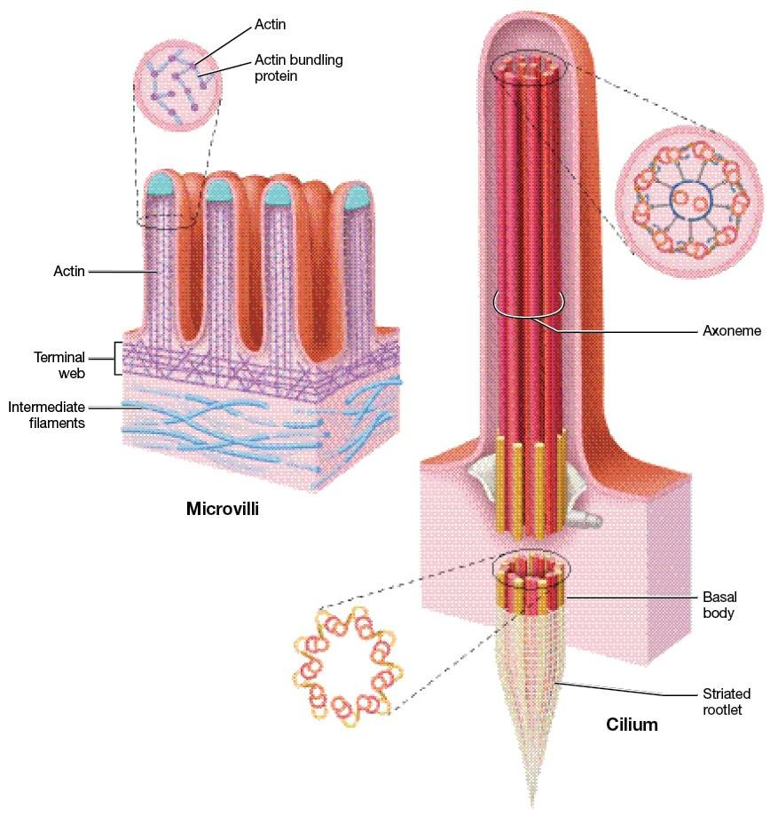
Microvilli, cilium, and the basal body.
Histology image: LeBoffe histology, adapted by Rowley. Used with permission.
Part 2 · Under the microscope
Microvilli as a brush border
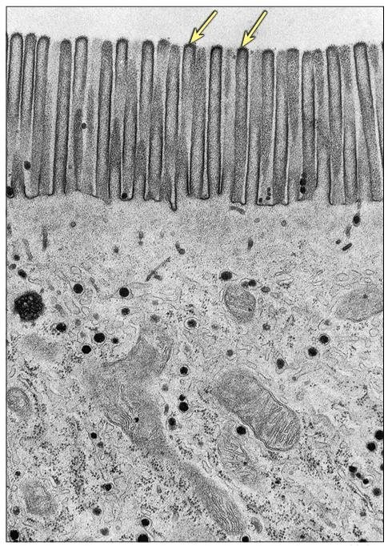
Microvilli pack the apical surface into a brush border (TEM). This is what surface area for absorption looks like at high magnification.
Histology image: LeBoffe histology, adapted by Rowley. Used with permission.
Part 2 · Cell junctions
How cells join: junctions and their proteins
- Tight junctions seal the gap between cells so nothing leaks between them. Built from claudins and occludins.
- Desmosomes are anchoring junctions that rivet cells together against pulling; they link cadherins to intermediate filaments.
- Hemidesmosomes anchor a cell to the basement membrane using integrins.
- Gap junctions are channels that let ions and small molecules pass cell to cell; each is built from connexins forming a connexon.
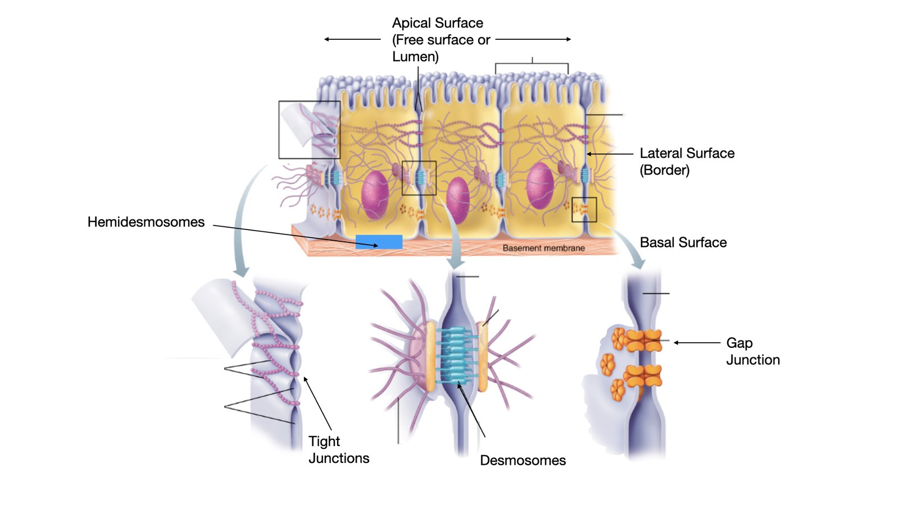
Cell junctions at the apical, lateral, and basal surfaces.
Part 3
The Nucleus
The control center: it stores the genetic code and controls what crosses in and out through its pores.
Part 3 · Control center
The nucleus
Usually the largest structure in the cell.
- Nuclear envelope: the double membrane enclosing the nucleus; its outer membrane is continuous with the rough ER.
- Nuclear pores: protein-lined channels that regulate two-way traffic. Messenger RNA and ribosomal subunits move out; proteins needed inside move in.
- Nucleoplasm: the fluid that suspends the nuclear contents.
- Nucleolus: a dense body where ribosomal subunits are assembled.
- Chromatin is the loose, threadlike DNA of a non-dividing cell; chromosomes are its tightly coiled form, visible when the cell divides.
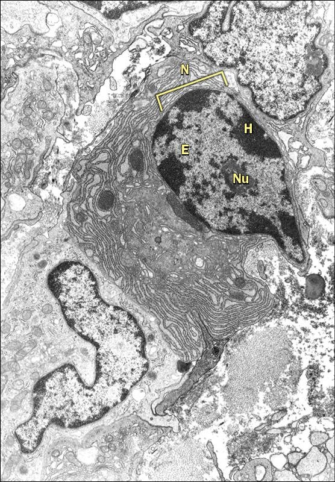
The nucleus in section (TEM): envelope, nucleolus, chromatin.
Histology image: LeBoffe histology, adapted by Rowley. Used with permission.
Part 3 · Traffic control
Nuclear pores control the traffic
- The envelope is not a sealed wall. Nuclear pores perforate it and choose what crosses.
- Each pore is a nuclear pore complex: eight subunits arranged in a ring around a central plug, giving the face-on view its star shape.
- Out: messenger RNA and ribosomal subunits, headed for protein synthesis in the cytoplasm.
- In: proteins built in the cytoplasm but needed inside the nucleus.
- The outer membrane is studded with ribosomes and flows directly into the rough ER, tying the nucleus to the endomembrane system.
Nuclear pore complex: cross-section (left) and the eight-subunit face view around a central plug (original diagram).
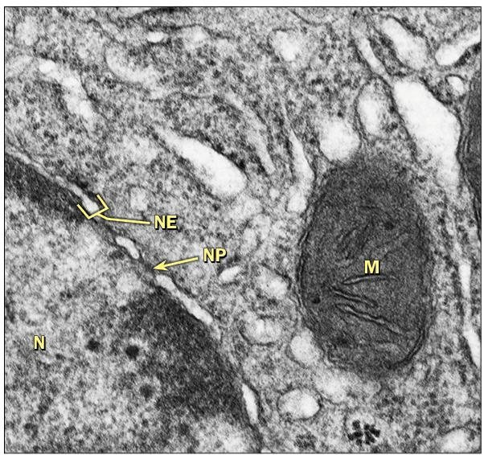
Real TEM: nuclear envelope (NE), nuclear pores (NP), mitochondrion (M).
Histology image: LeBoffe histology, adapted by Rowley. Used with permission.
Part 3 · Busy cells
The nucleolus and busy cells
- A prominent nucleolus signals a cell making large amounts of protein; it is the ribosome factory.
- Neurons are a classic example: a large pale nucleus with a single dark, obvious nucleolus.
- Read it backward: when you see a big nucleolus on a slide, expect a cell with heavy protein output.
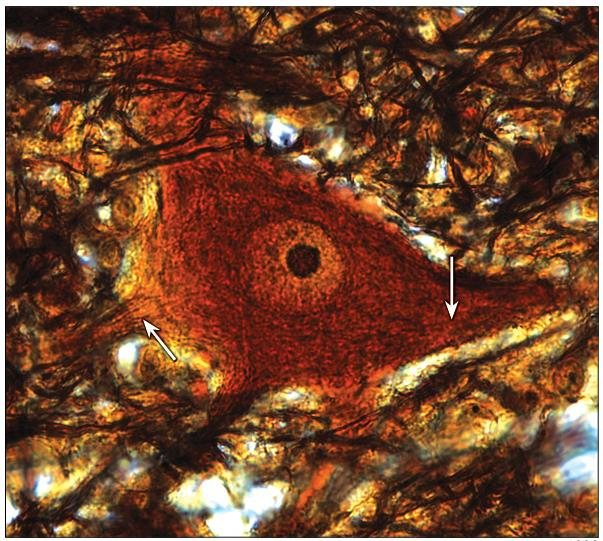
A neuron's prominent nucleolus marks heavy protein output.
Histology image: LeBoffe histology, adapted by Rowley. Used with permission.
Part 4
The Endomembrane System
The membranous organelles connect into one route: nuclear envelope, ER, Golgi, vesicles, and lysosomes. Follow a product from where it is made to where it leaves.
Part 4 · Membranous organelles
Membranous organelles
- Rough ER: ribosome-studded membrane network; makes and packages proteins.
- Smooth ER: tubular network with no ribosomes; makes lipids and stores calcium.
- Golgi apparatus: a stack of flattened sacs that sorts, packages, and ships cell products.
- Lysosomes: sacs of digestive enzymes that break down worn parts and debris.
- Peroxisomes: enzyme sacs that neutralize toxins and free radicals.
- Mitochondria and vesicles round out the membrane-bound set.
Membranous organelles on the lab model.
Part 4 · The path
The secretory pathway
The numbered route a secreted protein follows, in order. The mechanism belongs to physiology; here we trace the anatomy of the path.
Rough ER → transport vesicle → Golgi → secretory vesicle → exocytosis.
Part 5
Cytoskeleton, Power & Storage
The non-membranous structures: ribosomes, the cytoskeleton, the centrosome, and the powerhouse that supplies them all.
Part 5 · Non-membranous
Non-membranous organelles
- Ribosomes: tiny RNA-and-protein particles, free in the cytosol or on the rough ER; they build proteins.
- Cytoskeleton: an internal protein framework giving shape and allowing movement.
- Microfilaments (actin) are thinnest; intermediate filaments are rope-like and resist pulling; microtubules are thickest, hollow transport tracks.
- Centrosome: organizes microtubules; its paired centrioles (9+0 triplets) organize the spindle during division.
The three fibers by thickness.
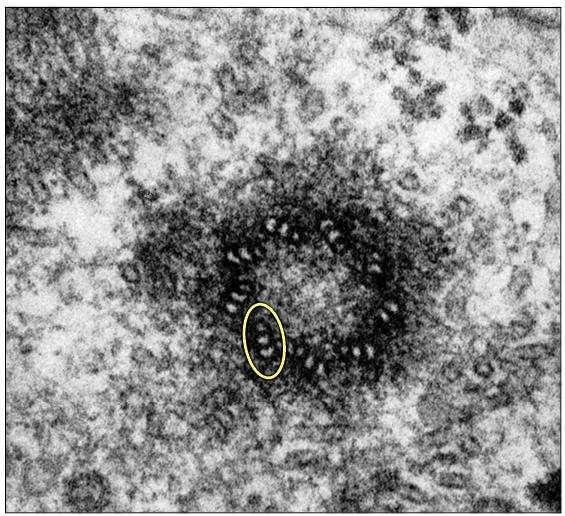
Centriole in cross-section: nine microtubule triplets (9+0) in a pinwheel. One triplet is circled.
Histology image: LeBoffe histology, adapted by Rowley. Used with permission.
Part 5 · Cytosol & storage
Cytosol and cellular inclusions
The fluid the organelles live in, and the materials the cell stores in it.
- Cytosol: the gel-like intracellular fluid, roughly half the cell's volume. Mostly water, with dissolved ions, nutrients, sugars, amino acids, and proteins.
- It suspends the organelles and the cytoskeleton, and it is the site of many of the cell's chemical reactions.
- Cellular inclusions are stored, non-living substances suspended in the cytosol. They are not membrane-bound organelles.
- Glycogen granules store sugar (liver, muscle); lipid droplets store fat (adipocytes); pigments such as melanin and lipofuscin collect in some cells.
Part 5 · Powerhouse
Mitochondria supply the energy
- Mitochondria are double-membraned organelles that produce most of the cell's ATP.
- The inner membrane folds into cristae that pack in surface area for energy production.
- Cells with heavy energy demand carry many of them: cardiac and skeletal muscle, kidney tubules.
- Because mitochondria carry their own small set of DNA, mitochondrial disorders follow a distinctive inheritance pattern.
A mitochondrion (M) beside the nuclear envelope (TEM).
Histology image: LeBoffe histology, adapted by Rowley. Used with permission.
Part 6
Cells Under the Microscope
Histology is how we read cells on a slide. Stains make the nucleus dark and the cytoplasm pale, and a cell's shape reveals its job.
Part 6 · Reading a slide
What histology shows you
- Routine H&E staining turns nuclei dark purple-blue and cytoplasm pink, so the first thing you see is where the nuclei are.
- Count and shape of nuclei, plus how cells are packed, tells you the tissue.
- You will identify cells by these features on the lab practical, not just on a model.
- This is the bridge to the next module, where cells are organized into the four tissue types.
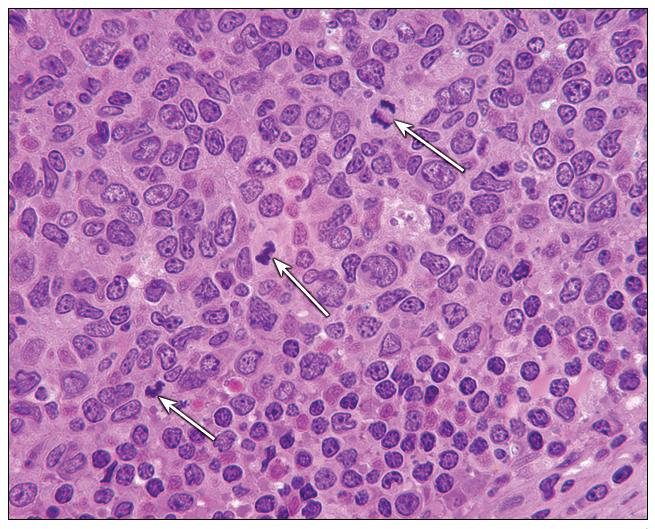
H&E: dark nuclei against pale cytoplasm.
Histology image: LeBoffe histology, adapted by Rowley. Used with permission.
Part 6 · Form follows function
A cell's shape matches its job
- Muscle cell: long and packed with mitochondria, because contraction demands a constant, heavy supply of ATP. Cardiac cells join end to end at intercalated discs (gap junctions plus desmosomes).
- Red blood cell: loses its nucleus and organelles, freeing interior space to carry oxygen.
- White blood cell: changes shape freely so it can squeeze between cells to reach an infection.
- Rule: structure follows job. A cell built for a task carries the organelles that task needs.
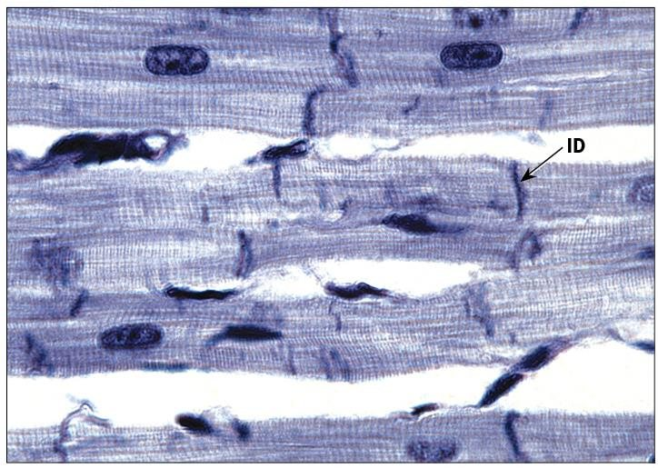
Cardiac muscle joined at intercalated discs (ID).
Histology image: LeBoffe histology, adapted by Rowley. Used with permission.
Part 6 · Clinical tie-in
The organelle points to the disease
When you know what an organelle does, you can predict what fails when it is defective.
- Lysosomes that cannot break down their contents cause the lysosomal storage diseases, such as Tay-Sachs.
- Cilia that do not form correctly cause primary ciliary dyskinesia: the airways cannot clear mucus, so infections build up.
- Mitochondria carry their own DNA, so mitochondrial disorders follow a distinctive maternal inheritance pattern.
Part 7
Check Your Understanding
Three questions, increasing in depth. Click an option, then reveal the answer. Use these to teach yourself, not just to score.
Part 7 · Recall (DOK 1)
Name the structure
Depth of Knowledge 1 · Recall
Which organelle assembles ribosomal subunits?
Answer
The nucleolus, the dense body inside the nucleus, assembles ribosomal subunits.
Part 7 · Skill / concept (DOK 2)
Match structure to protein
Depth of Knowledge 2 · Skill and concept
A junction lets ions pass directly from one cell to the next. Which protein builds it?
Answer
Gap junctions are built from connexins, which assemble into a connexon channel. Claudins seal tight junctions, cadherins link desmosomes, integrins anchor hemidesmosomes.
Part 7 · Strategic reasoning (DOK 3)
Predict from structure
Depth of Knowledge 3 · Strategic reasoning
A biopsy cell shows an unusually dense brush border and many mitochondria. What is this cell most likely built to do?
Answer
A dense brush border (many microvilli) maximizes surface area for absorption, and abundant mitochondria supply the ATP that active uptake demands. This is the profile of an absorptive cell, like a kidney tubule or intestinal lining cell.
Part 7 · Lab check
Label it
Cover the labels and name every structure on both models before lab.
Round cell model.
White cell model.
Wrap-up
Key takeaways
- Every cell has three regions: plasma membrane, cytoplasm, nucleus.
- The membrane is a fluid mosaic: bilayer plus integral and peripheral proteins, cholesterol, and a glycocalyx.
- Surfaces specialize: microvilli (actin) absorb, cilia (9+2 on a basal body) sweep.
- Junctions have proteins: tight (claudins), desmosome (cadherins), hemidesmosome (integrins), gap (connexins).
- The nucleus stores DNA and controls traffic through nuclear pores; the nucleolus builds ribosomes.
- The endomembrane route: rough ER → vesicle → Golgi → secretory vesicle → exocytosis.
- Form follows function, and on a slide the dark nucleus is where you start reading the cell.
Lecture slides
Show the slides for this topic ▸
Open a deck in its own tab so you can scroll it beside the video. Your printed master copy has the same content.